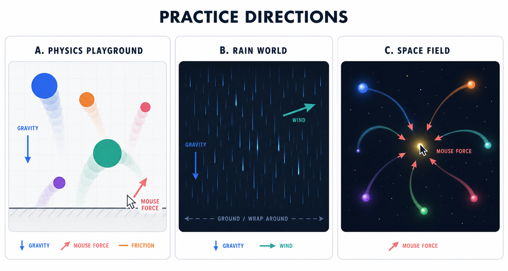
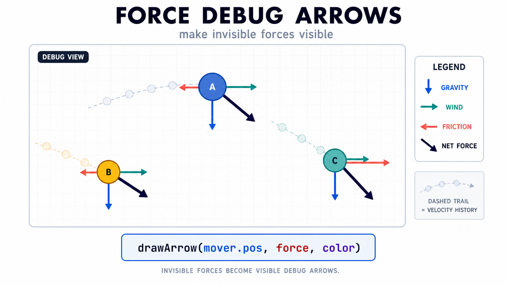
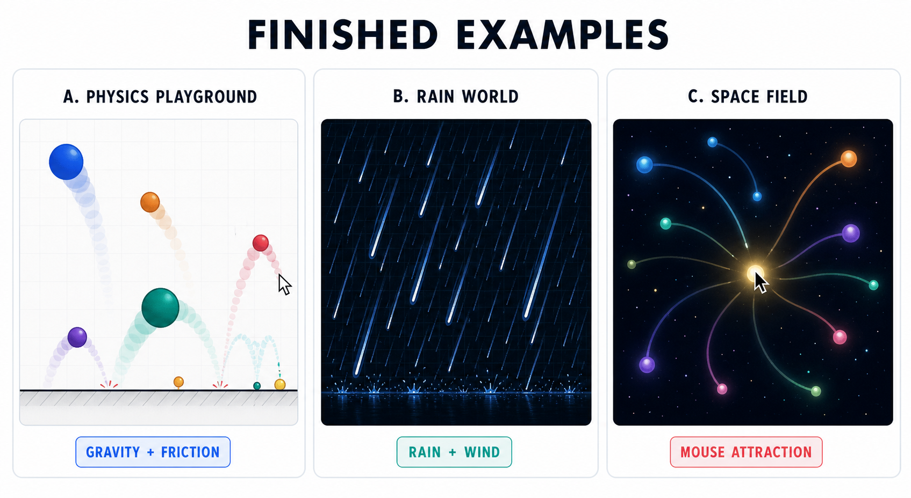
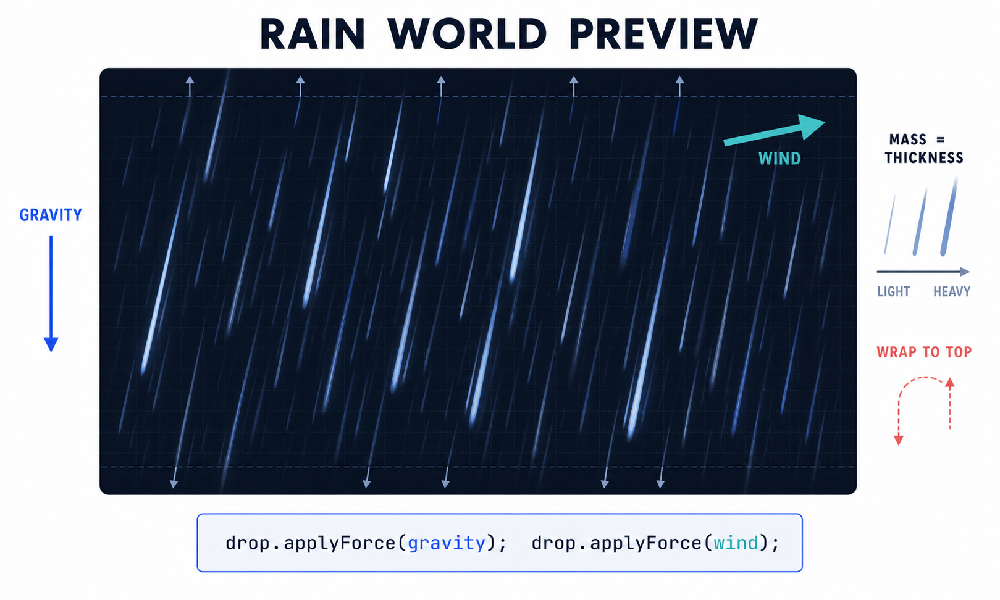

10주차 3교시 — 학생 주도 실습: 힘으로 움직이는 물리 세계
강의 아웃라인: week-10-outline 이전 교시: week-10-period2-student (다중 힘, 질량 차이, 마찰력) 다음 주차: week-11-outline (외부 데이터와 데이터 시각화)
| 항목 | 내용 |
|---|---|
| 대상 | P5.js 입문자 (테크아트 전공) |
| 소요 시간 | 45분 |
| 사전 준비 | 1교시 applyForce + 중력, 2교시 다중 힘·질량·마찰력 |
| 결과물 | applyForce 기반 인터랙티브 물리 시뮬레이션 1점 |
-
applyForce()패턴으로 중력, 바람, 마찰력 중 2가지 이상의 힘을 구현하는 물리 시뮬레이션을 만든다 - 질량이 다른 여러 객체가 동시에 존재하는 장면을 만들고, 힘과 질량의 관계를 시각적으로 확인한다
- 9주차의 정적 메서드 패턴(
p5.Vector.~)을 일관되게 사용한다
환경 설정 + 방향 선택
p5.js Web Editor(editor.p5js.org)를 열고 새 스케치를 만듭니다. 파일 제목은 ‘10주차-물리세계’ 같은 이름으로 바꿔 둡니다.
2교시 마지막에 안내한 세 방향 중 하나를 골라 진행합니다. 아래 이미지는 각 방향의 결과와 필요한 힘을 한눈에 비교한 미리보기입니다.

처음이라면 방향 A를 권장합니다. Step 1·2까지는 모든 방향이 동일하고, Step 3에서 분기됩니다. 방향은 도중에 바꿔도 괜찮습니다.
방향이 정해졌다면 아래 스타터 코드를 복사해 시작합니다.
스타터 코드
아래 코드를 복사해 시작합니다. 2교시에서 완성한 Mover
클래스와 기본 setup()/draw() 구조입니다.
// === Mover 클래스 ===
class Mover {
constructor(x, y, mass) {
this.pos = createVector(x, y);
this.vel = createVector(random(-1, 1), 0);
this.acc = createVector(0, 0);
this.mass = mass;
}
applyForce(force) {
let f = p5.Vector.div(force, this.mass);
this.acc.add(f);
}
applyFriction(c) {
if (this.vel.mag() < c) {
this.vel.set(0, 0);
return;
}
// 9주차 정적 메서드 패턴으로 통일
let friction = p5.Vector.mult(this.vel, -1);
friction.normalize();
friction.mult(c);
this.applyForce(friction);
}
update() {
this.vel.add(this.acc);
this.pos.add(this.vel);
this.acc.set(0, 0);
}
edges() {
if (this.pos.x > width) { this.pos.x = width; this.vel.x *= -1; }
if (this.pos.x < 0) { this.pos.x = 0; this.vel.x *= -1; }
if (this.pos.y > height) {
this.pos.y = height;
if (abs(this.vel.y) > 1) {
this.vel.y *= -0.9;
} else {
this.vel.y = 0;
}
}
}
display() {
stroke(0);
fill(175, 200);
ellipse(this.pos.x, this.pos.y, this.mass * 16);
}
}
// === 메인 코드 ===
let movers = [];
function setup() {
createCanvas(600, 400);
// TODO: Step 1에서 객체 1개 추가, Step 2에서 배열로 확장
}
function draw() {
background(220);
// TODO: Step 1에서 중력 적용, Step 2에서 다중 객체, Step 3에서 추가 힘
}Step 1 — 단일 객체로 동작 확인
목표: Mover 객체 1개에 중력을 적용해
자유낙하 + 바닥 바운스가 정상적으로 동작하는지 확인
먼저 공 1개로 기본 동작을 확인합니다. 한 번에 많이 만들지 말고, 1개가 정상 동작하는 것을 확인한 뒤 확장합니다.
작성할 코드:
let movers = [];
function setup() {
createCanvas(600, 400);
// 공 1개 생성 (x: 300, y: 50, mass: 2)
movers.push(new Mover(300, 50, 2));
}
function draw() {
background(220);
// 중력 벡터
let gravity = createVector(0, 0.2);
for (let mover of movers) {
mover.applyForce(gravity); // 중력 적용
mover.update(); // 위치 업데이트
mover.edges(); // 바닥 처리
mover.display(); // 화면에 그리기
}
}예상 결과: - 회색 원이 위에서 떨어짐 - 바닥에서 튕김 - 튈 때마다 점점 낮아짐 (에너지 손실) - 작은 튐은 정지 처리되어 바닥에서 멈춘 것처럼 보임
확인 사항: - [ ] 공이 떨어지는가? - [ ] 바닥에서 튕기는가? - [ ] 점점 낮아지다가 멈추는가?
힌트 (막히면 펼쳐 보세요)
- 공이 안 보일 때:
createCanvas크기와 Mover의 초기 위치를 확인합니다. x=300이 캔버스 안에 있는지 점검합니다. - 공이 떨어지지 않을 때:
mover.applyForce(gravity)가draw()안에서 호출되는지 확인합니다. - 바닥을 뚫고 나갈 때:
mover.edges()가 호출되는지 확인합니다.
Step 2 — 다중 객체 + 질량 차이
목표: 질량이 다른 Mover 5개 이상을
배열로 만들어, 같은 중력에 다르게 반응하는 모습을 확인
Step 1에서 공 1개가 정상 동작하면 이제 여러 개를 만듭니다. 질량을 다르게 설정해 크기와 움직임이 어떻게 달라지는지 확인합니다.
수정할 코드 (setup 부분):
function setup() {
createCanvas(600, 400);
// 질량이 다른 Mover 8개 생성
for (let i = 0; i < 8; i++) {
let x = random(50, width - 50);
let y = random(20, 80);
let mass = random(1, 5);
movers.push(new Mover(x, y, mass));
}
}draw()에 바람 추가:
function draw() {
background(220);
let gravity = createVector(0, 0.2);
let wind = createVector(0.05, 0); // 약한 오른쪽 바람 추가
for (let mover of movers) {
mover.applyForce(gravity);
mover.applyForce(wind); // 바람 적용 추가!
mover.update();
mover.edges();
mover.display();
}
}예상 결과: - 크기가 다른 원 8개가 떨어짐 - 작은(가벼운) 원은 바람에 많이 밀리고 빠르게 반응 - 큰(무거운) 원은 바람에 적게 밀리고 둔하게 반응 - 각 원이 서로 다른 궤적으로 움직임
확인 사항: - [ ] 8개 이상의 원이 화면에 보이는가? - [ ] 원의 크기가 각각 다른가? (질량 차이) - [ ] 작은 원과 큰 원의 움직임이 다른가?
힌트 (막히면 펼쳐 보세요)
- 공이 모두 같은 크기일 때:
new Mover(x, y, mass)의 mass에random(1, 5)등으로 다른 값을 넣고 있는지 확인합니다. - 공이 모두 동일하게 움직일 때:
applyForce()안에서this.mass로 나누는 코드가 있는지 확인합니다. - 바람 효과가 보이지 않을 때:
wind값을(0.1, 0)정도로 키워서 다시 실행합니다.
Step 3 — 두 번째 힘 추가 + 인터랙션
목표: 중력 외에 두 번째 힘(바람 또는 마찰력) 추가 + 마우스/키보드 인터랙션 1개
Step 2까지는 기본 물리 구조를 확인하는 과정입니다. Step 3부터는 추가 힘과 인터랙션을 선택하면서 결과가 서로 달라집니다.
스타터 코드의 Mover 클래스에는
applyFriction() 메서드가 이미 들어 있습니다.
draw() 안에서 호출만 하면 마찰력이
적용됩니다. 여기에 인터랙션을 더합니다.
세 가지 방법 중 하나만 선택해 시도합니다. 모두 해보려 하면 시간이 부족합니다. 한 가지가 정상 동작하면 Step 4로 넘어갑니다.
방법 A — 마찰력 + 마우스 클릭 바람
function draw() {
background(220);
let gravity = createVector(0, 0.2);
for (let mover of movers) {
mover.applyFriction(0.03); // 마찰력 추가!
mover.applyForce(gravity);
mover.update();
mover.edges();
mover.display();
}
}
function mousePressed() {
// 클릭하면 마우스 x 위치에 따라 좌우 바람
let wind = createVector(mouseX - width / 2, 0);
wind.normalize();
wind.mult(0.5);
for (let mover of movers) {
mover.applyForce(wind);
}
}방법 B — 키보드로 바람 제어
function keyPressed() {
let wind;
if (keyCode === LEFT_ARROW) {
wind = createVector(-0.5, 0); // 왼쪽 바람
} else if (keyCode === RIGHT_ARROW) {
wind = createVector(0.5, 0); // 오른쪽 바람
} else if (keyCode === UP_ARROW) {
wind = createVector(0, -0.5); // 위쪽 바람
}
if (wind) {
for (let mover of movers) {
mover.applyForce(wind);
}
}
}방법 C —
마우스 위치로 지속적인 바람 만들기 (draw() 안에서)
function draw() {
background(220);
let gravity = createVector(0, 0.2);
// 마우스를 누르고 있으면 바람 적용
if (mouseIsPressed) {
let wind = createVector(mouseX - width / 2, mouseY - height / 2);
wind.normalize();
wind.mult(0.1);
for (let mover of movers) {
mover.applyForce(wind);
}
}
for (let mover of movers) {
mover.applyFriction(0.02);
mover.applyForce(gravity);
mover.update();
mover.edges();
mover.display();
}
}예상 결과: - 마찰력으로 공들이 서서히 멈춤 - 마우스 클릭/키보드로 바람을 일으키면 공들이 반응함 - 가벼운 공은 크게 밀리고, 무거운 공은 조금만 밀림
확인 사항: - [ ] 마찰력이 적용되어 공이 서서히 멈추는가? - [ ] 마우스/키보드 인터랙션이 동작하는가? - [ ] 인터랙션 시 질량에 따라 반응이 다른가?
힌트 (막히면 펼쳐 보세요)
- 마찰력이 너무 강해 공이 움직이지 않을 때: 마찰계수를 0.01로 줄입니다.
- 마찰력이 체감되지 않을 때: 마찰계수를 0.1로 키웁니다.
- 키보드 인터랙션이 동작하지 않을 때: 캔버스를 한 번 클릭한 후 키를 눌러 봅니다. p5.js에서 키보드 입력은 캔버스에 포커스가 있어야 동작합니다.
Step 4 — 시각 효과 및 확장 (선택)
목표: Step 1~3까지 동작을 확인한 뒤, 시각 요소를 다듬기
Step 3까지 완료했다면 필수 요구사항은 모두 충족했습니다. 남는 시간에는 작품의 시각적 완성도를 높여 봅니다. 아래 옵션 중 1~2개만 선택해도 충분하므로, 모두 시도하지 않아도 됩니다.
옵션 A — 질량에 따라 색상 다르게
display() {
noStroke();
// 질량이 작으면 밝고, 크면 어두운 색
let c = map(this.mass, 1, 5, 200, 50);
fill(c, 150, 255, 200);
ellipse(this.pos.x, this.pos.y, this.mass * 16);
}옵션 B — HSB 색상 모드 + 속도에 따른 색 변화
function setup() {
createCanvas(600, 400);
colorMode(HSB, 360, 100, 100, 100); // HSB 모드
// ... movers 생성
}
// Mover 클래스의 display() 수정
display() {
noStroke();
let speed = this.vel.mag();
let hue = map(speed, 0, 5, 200, 0); // 빠르면 빨간색, 느리면 파란색
fill(hue, 80, 90, 80);
ellipse(this.pos.x, this.pos.y, this.mass * 16);
}옵션 C — 잔상 효과 (5주차 복습)
function draw() {
// background(220) 대신:
fill(220, 220, 220, 30);
noStroke();
rect(0, 0, width, height);
// ... 나머지 코드
}배경을 완전히 지우는 대신 반투명하게 덮으면 이전 프레임의 잔상이 남아 궤적이 보입니다.
옵션 D — 마우스 클릭으로 새 객체 추가
function mousePressed() {
movers.push(new Mover(mouseX, mouseY, random(1, 4)));
}옵션 E — 힘의 방향 화살표 시각화

// draw() 안에서 힘의 방향을 화살표로 표시
function drawArrow(base, vec, myColor) {
push();
stroke(myColor);
strokeWeight(2);
fill(myColor);
translate(base.x, base.y);
line(0, 0, vec.x * 50, vec.y * 50);
rotate(vec.heading());
let arrowSize = 7;
translate(vec.mag() * 50 - arrowSize, 0);
triangle(0, arrowSize / 2, 0, -arrowSize / 2, arrowSize, 0);
pop();
}
// 사용 예: draw() 안에서
drawArrow(mover.pos, gravity, color(0, 0, 255)); // 중력: 파란 화살표
drawArrow(mover.pos, friction, color(255, 0, 0)); // 마찰력: 빨간 화살표힘의 방향과 크기를 화살표로 표시하면 어떤 힘이 작용하는지 한눈에 볼 수 있습니다.
완성 예시

방향 A 완성 — 물리 놀이터
class Mover {
constructor(x, y, mass) {
this.pos = createVector(x, y);
this.vel = createVector(random(-1, 1), 0);
this.acc = createVector(0, 0);
this.mass = mass;
this.c = color(
map(mass, 1, 5, 100, 50),
map(mass, 1, 5, 200, 100),
255,
200
);
}
applyForce(force) {
let f = p5.Vector.div(force, this.mass);
this.acc.add(f);
}
applyFriction(c) {
if (this.vel.mag() < c) {
this.vel.set(0, 0);
return;
}
let friction = p5.Vector.mult(this.vel, -1);
friction.normalize();
friction.mult(c);
this.applyForce(friction);
}
update() {
this.vel.add(this.acc);
this.pos.add(this.vel);
this.acc.set(0, 0);
}
edges() {
if (this.pos.x > width) { this.pos.x = width; this.vel.x *= -1; }
if (this.pos.x < 0) { this.pos.x = 0; this.vel.x *= -1; }
if (this.pos.y > height) {
this.pos.y = height;
if (abs(this.vel.y) > 1) {
this.vel.y *= -0.9;
} else {
this.vel.y = 0;
}
}
}
display() {
stroke(0, 50);
fill(this.c);
ellipse(this.pos.x, this.pos.y, this.mass * 16);
}
}
let movers = [];
function setup() {
createCanvas(600, 400);
for (let i = 0; i < 10; i++) {
movers.push(new Mover(random(50, width - 50), random(20, 80), random(1, 5)));
}
}
function draw() {
background(240);
let gravity = createVector(0, 0.2);
for (let mover of movers) {
mover.applyFriction(0.02);
mover.applyForce(gravity);
mover.update();
mover.edges();
mover.display();
}
// UI 텍스트
fill(0);
noStroke();
textSize(14);
textAlign(LEFT);
text("클릭: 바람 불기 | 방향은 마우스 위치에 따라", 10, 20);
}
function mousePressed() {
let wind = createVector(mouseX - width / 2, 0);
wind.normalize();
wind.mult(0.5);
for (let mover of movers) {
mover.applyForce(wind);
}
}방향 B 완성 — 비 내리는 풍경

class Raindrop {
constructor(x, y, mass) {
this.pos = createVector(x, y);
this.vel = createVector(0, random(1, 3));
this.acc = createVector(0, 0);
this.mass = mass;
this.len = mass * 8; // 빗방울 길이 (질량에 비례)
}
applyForce(force) {
let f = p5.Vector.div(force, this.mass);
this.acc.add(f);
}
applyFriction(c) {
if (this.vel.mag() < c) {
this.vel.set(0, 0);
return;
}
let friction = p5.Vector.mult(this.vel, -1);
friction.normalize();
friction.mult(c);
this.applyForce(friction);
}
update() {
this.vel.add(this.acc);
this.pos.add(this.vel);
this.acc.set(0, 0);
}
edges() {
// 바닥에 닿으면 위에서 다시 시작
if (this.pos.y > height) {
this.pos.y = 0;
this.pos.x = random(width);
this.vel.set(0, random(1, 3));
}
if (this.pos.x > width) this.pos.x = 0;
if (this.pos.x < 0) this.pos.x = width;
}
display() {
stroke(150, 180, 255, 180);
strokeWeight(map(this.mass, 0.5, 3, 1, 3));
// 빗방울은 속도 방향으로 선을 그림
let endPos = p5.Vector.add(this.pos, p5.Vector.mult(this.vel, 2));
line(this.pos.x, this.pos.y, endPos.x, endPos.y);
}
}
let drops = [];
let windStrength = 0;
function setup() {
createCanvas(600, 400);
for (let i = 0; i < 100; i++) {
drops.push(new Raindrop(random(width), random(height), random(0.5, 3)));
}
}
function draw() {
background(40, 45, 60);
let gravity = createVector(0, 0.1);
let wind = createVector(windStrength, 0);
for (let drop of drops) {
drop.applyForce(gravity);
drop.applyForce(wind);
drop.update();
drop.edges();
drop.display();
}
// UI
fill(200);
noStroke();
textSize(14);
text("좌/우 화살표: 바람 방향 변경", 10, 20);
text("바람: " + windStrength.toFixed(2), 10, 40);
}
function keyPressed() {
if (keyCode === LEFT_ARROW) windStrength -= 0.02;
if (keyCode === RIGHT_ARROW) windStrength += 0.02;
}방향 C 완성 — 우주 공간
class SpaceObject {
constructor(x, y, mass) {
this.pos = createVector(x, y);
this.vel = createVector(random(-0.5, 0.5), random(-0.5, 0.5));
this.acc = createVector(0, 0);
this.mass = mass;
this.hue = random(360);
}
applyForce(force) {
let f = p5.Vector.div(force, this.mass);
this.acc.add(f);
}
update() {
this.vel.add(this.acc);
this.pos.add(this.vel);
this.acc.set(0, 0);
}
edges() {
// 화면 반대편에서 나타남 (토러스 공간)
if (this.pos.x > width) this.pos.x = 0;
if (this.pos.x < 0) this.pos.x = width;
if (this.pos.y > height) this.pos.y = 0;
if (this.pos.y < 0) this.pos.y = height;
}
display() {
noStroke();
fill(this.hue, 70, 95, 80);
ellipse(this.pos.x, this.pos.y, this.mass * 12);
// 작은 광채 효과
fill(this.hue, 30, 100, 30);
ellipse(this.pos.x, this.pos.y, this.mass * 20);
}
}
let objects = [];
function setup() {
createCanvas(600, 400);
colorMode(HSB, 360, 100, 100, 100);
for (let i = 0; i < 20; i++) {
objects.push(new SpaceObject(random(width), random(height), random(1, 4)));
}
}
function draw() {
background(0, 0, 10, 30); // 잔상 효과
// 아주 약한 중력 (우주이므로)
let gravity = createVector(0, 0.01);
for (let obj of objects) {
// 마우스를 향한 인력
if (mouseIsPressed) {
let attraction = p5.Vector.sub(
createVector(mouseX, mouseY),
obj.pos
);
attraction.setMag(0.3);
obj.applyForce(attraction);
}
obj.applyForce(gravity);
obj.update();
obj.edges();
obj.display();
}
// UI
fill(0, 0, 80);
noStroke();
textSize(14);
text("마우스 클릭 & 드래그: 끌어당기기", 10, 20);
}선택 확장 과제
필수 요구사항을 모두 충족했다면 아래 중 하나에 도전해 봅니다.
마우스 인력(Attraction): 마우스를 중력원으로 삼아 모든 객체가 마우스를 향해 끌려오도록 만들기 (2교시 사례 2 참고)
파티클 생성: 마우스 클릭 시 그 위치에서 작은 파티클 5개가 사방으로 퍼지도록 만들기
슬라이더로 힘 조절:
createSlider()를 사용해 중력, 마찰계수를 실시간으로 조절하는 슬라이더 추가let gravitySlider; function setup() { createCanvas(600, 400); gravitySlider = createSlider(0, 1, 0.2, 0.01); gravitySlider.position(10, height + 10); } function draw() { let gravity = createVector(0, gravitySlider.value()); // ... }유체 저항 영역: 화면 하단 절반을 ‘물’ 영역으로 설정하고, 그 안에서는 마찰계수를 크게 적용하기
// draw() 안에서 if (mover.pos.y > height / 2) { mover.applyFriction(0.15); // 물속: 강한 저항 } else { mover.applyFriction(0.01); // 공중: 약한 저항 }
마무리
스케치를 저장합니다. Windows는 Ctrl+S, Mac은 Cmd+S를 사용합니다.
오늘의 핵심 한 문장
힘이 가속도를 만들고, 가속도가 속도를 바꾸고, 속도가 위치를
바꾼다. applyForce() 하나로 자연스러운 움직임을
코드로 표현할 수 있습니다.
오늘 배운 것 정리
| 개념 | 핵심 | 코드 |
|---|---|---|
| 뉴턴 제2법칙 | a = F / m | p5.Vector.div(force, this.mass) |
| applyForce 패턴 | 힘 → 가속도 누적 | this.acc.add(f) |
| 매 프레임 초기화 | acc를 다음 프레임 전에 비움 | this.acc.set(0, 0) |
| 중력 | 일정한 아래 방향 힘 | createVector(0, 0.2) |
| 바람 | 수평 방향 힘 | createVector(0.1, 0) |
| 마찰력 (브레이크) | 속도 반대 방향, 감속 | p5.Vector.mult(vel, -1).normalize().mult(c) |
| 질량 | 같은 힘에 다른 반응 | applyForce 안에서 force / mass |
| 바운스 손실 | 에너지 일부 잃음 | this.vel.y *= -0.9 |
11주차 예고
다음 주에는 외부 데이터(JSON, CSV)를 불러와 시각화하는 방법을 학습합니다.
loadJSON(), loadTable(),
preload()를 배우고, 데이터를 시각적으로 표현하는
데이터 아트를 제작합니다.
물리 시뮬레이션과는 주제가 다르지만 벡터와 클래스는 계속 활용되므로, 오늘 배운 내용을 잘 기억해 둡니다.
(선택) 사전 학습 영상 안내
더 보고 싶다면 아래 영상을 참고합니다.